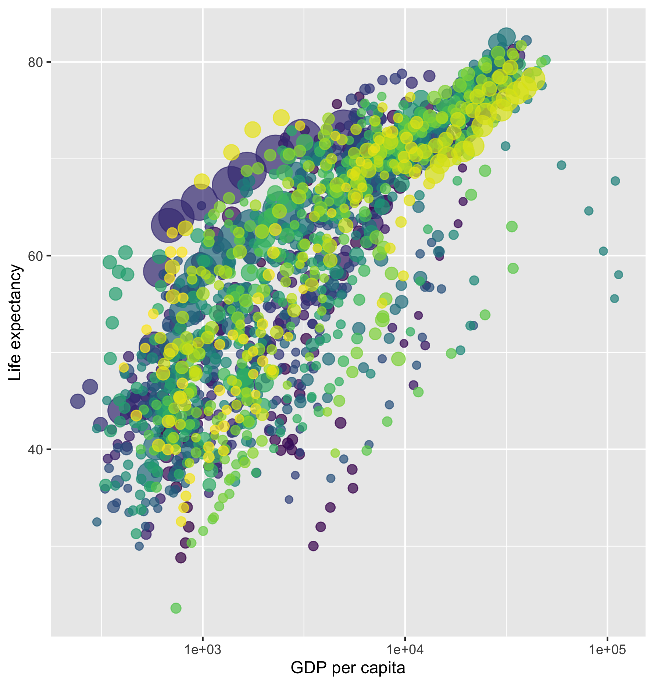
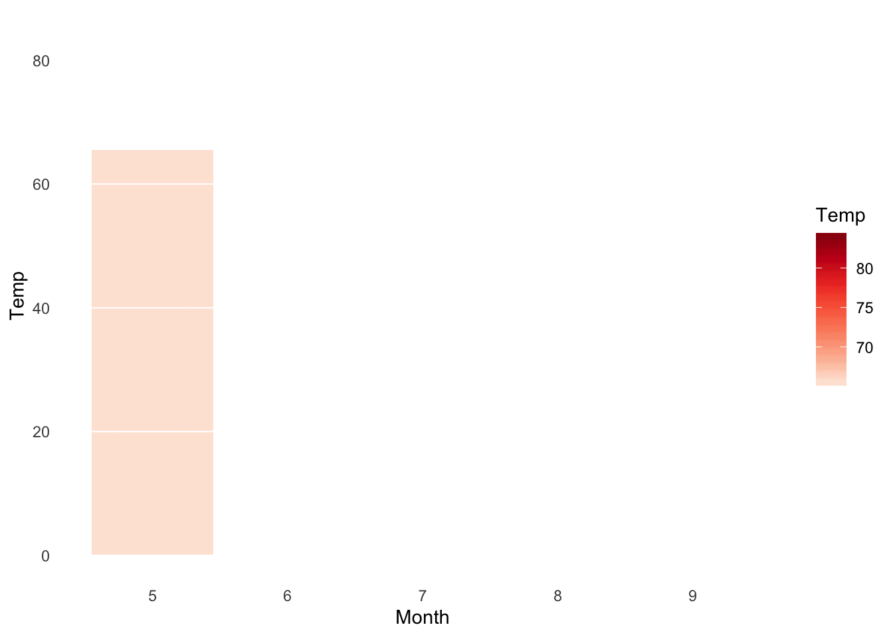

C Animation
C.1 gganimate: How to Create Plots with Beautiful Animation in R
gganimate is a package for creating animated ggplots. It provides a range of new functionality that can be added to the plot object in order to customize how it should change with time.
Key features of gganimate:
- transitions: you want your data to change
- views: you want your viewpoint to change
- shadows: you want the animation to have memory
C.1.1 Prerequisites
Load required packages and set the default ggplot2 theme to theme_bw():
C.1.2 Demo dataset
country year infant_mortality life_expectancy fertility
1 Albania 1960 115.4 62.9 6.19
2 Algeria 1960 148.2 47.5 7.65
3 Angola 1960 208.0 36.0 7.32
4 Antigua and Barbuda 1960 NA 63.0 4.43
5 Argentina 1960 59.9 65.4 3.11
6 Armenia 1960 NA 66.9 4.55
population gdp continent region
1 1636054 NA Europe Southern Europe
2 11124892 13828152297 Africa Northern Africa
3 5270844 NA Africa Middle Africa
4 54681 NA Americas Caribbean
5 20619075 108322326649 Americas South America
6 1867396 NA Asia Western AsiaC.1.3 Static plot
p <- ggplot(
gapminder,
aes(x = gdpPercap, y=lifeExp, size = pop, colour = country)
) +
geom_point(show.legend = FALSE, alpha = 0.7) +
scale_color_viridis_d() +
scale_size(range = c(2, 12)) +
scale_x_log10() +
labs(x = "GDP per capita", y = "Life expectancy")
p
C.1.4 Transition through distinct states in time
C.1.4.1 Basics
Key R function: transition_time(). The transition length between the states will be set to correspond to the actual time difference between them.
Label variables: frame_time. Gives the time that the current frame corresponds to.

Create facets by continent:

C.1.4.2 Let the view follow the data in each frame

C.1.4.3 Show preceding frames with gradual falloff
This shadow is meant to draw a small wake after data by showing the latest frames up to the current. You can choose to gradually diminish the size and/or opacity of the shadow. The length of the wake is not given in absolute frames as that would make the animation susceptible to changes in the framerate. Instead it is given as a proportion of the total length of the animation.
p + transition_time(year) +
labs(title = "Year: {frame_time}") +
shadow_wake(wake_length = 0.1, alpha = FALSE)

C.1.5 Reveal data along a given dimension
This transition allows you to let data gradually appear, based on a given time dimension.


C.1.6 Transition between several distinct stages of the data
Data preparation:
library(dplyr)
mean.temp <- airquality %>%
group_by(Month) %>%
summarise(Temp = mean(Temp))
mean.temp# A tibble: 5 x 2
Month Temp
<int> <dbl>
1 5 65.5484
2 6 79.100
3 7 83.9032
4 8 83.9677
5 9 76.9 Create a bar plot of mean temperature:
p <- ggplot(mean.temp, aes(Month, Temp, fill = Temp)) +
geom_col() +
scale_fill_distiller(palette = "Reds", direction = 1) +
theme_minimal() +
theme(
panel.grid = element_blank(),
panel.grid.major.y = element_line(color = "white"),
panel.ontop = TRUE
)
p
- transition_states():

- enter_grow() + enter_fade()

C.1.7 Read more
C.2 How to save your animation
The code to create animations can take a long time to run. So after you have created an animation, you’ll want to save it somewhere so you can display it without having to run the code.
The key function to use is anim_save(), which is very similar to saving static plots using ggsave(). It will save your animation as a gif. The first argument is the filename you want to give the animation and the second is the animation object, so if you have an animation object called p that you wanted to save in a file called “p.gif”, you would save it like so:
If you don’t supply the second argument, anim_save() will default to saving the most recent animation you rendered. So anim_save("animation.gif") will save the most recent animation as “animation.gif”.
If you don’t want to save your gif in the current directory, you can specify a directory using the path argument. Let’s say there is a subdirectory of your working directory called “gifs”. You can thus save “animation.gif” in “gifs” with anim_save("animation.gif", path = "gifs").
After you have created a gif, you can post it online. You can post it to Facebook by selecting “Photo/Video” on your Facebook status or to Twitter by clicking the photo icon.